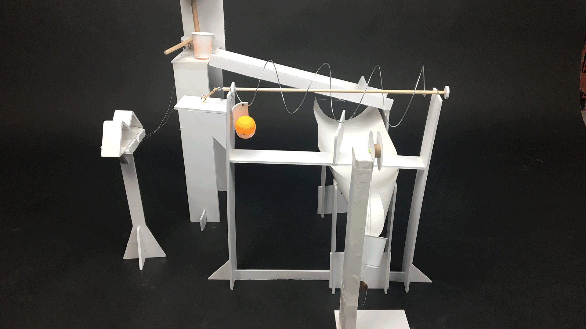
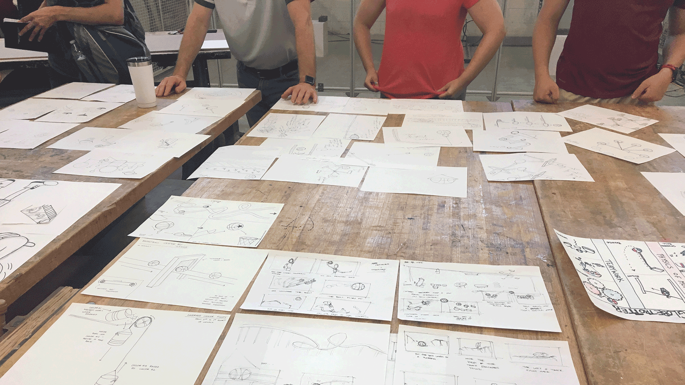
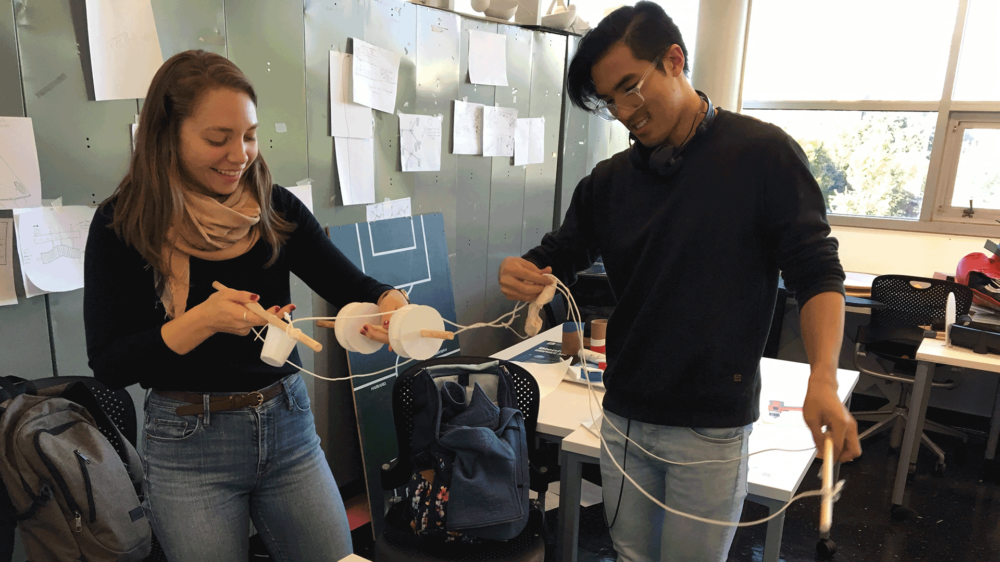
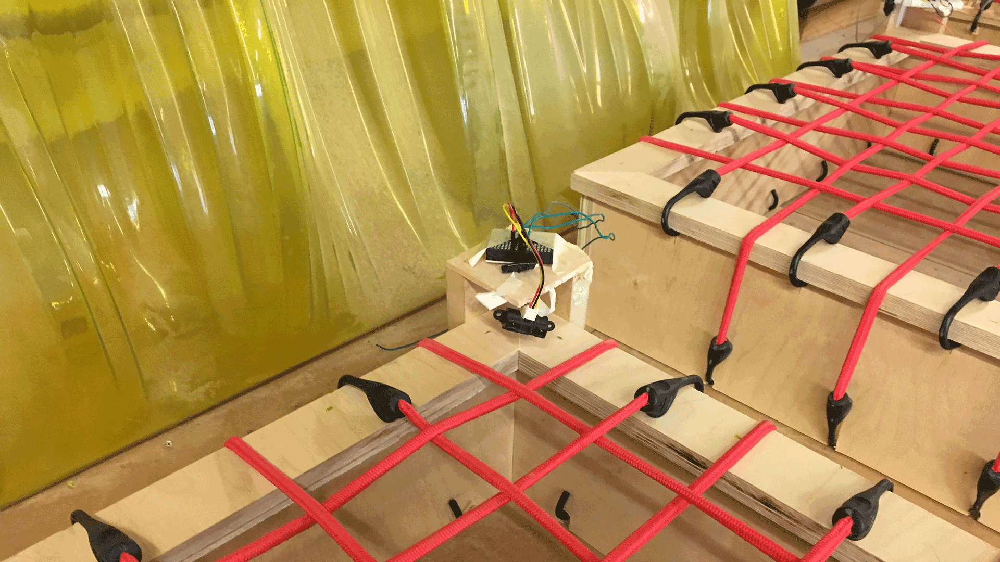
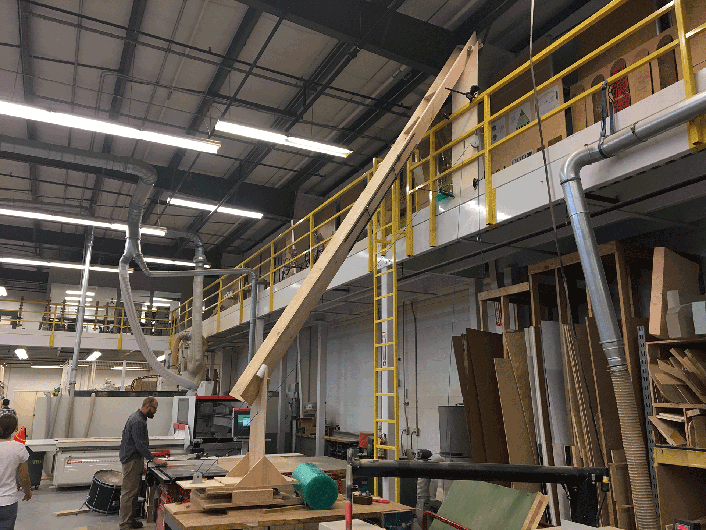

express the harlem globetrotters and their brand through the design and fabrication physical contraptions
As part of a sponsored project for a collaboration between the Industrial Design studio and Music Technology class at Georgia Tech, we were approached by the Atlanta-based Harlem Globetrotters to create and film our own original Rube Goldberg Machine.
The project took about two and a half months from beginning stages to our completed video, which will be shown as the Globetrotters take their global tour later this year. As such, the video is not publicly available at the moment.
We first started by creating scale-model demonstrations of the physical machines with a limited selection of materials (primarily foamcore). This primary stage was, foremost, an exploration of the six simple machines, creating multiple applications of
a given mechanism. Then, by combining my simple machines with fellow studio classmates, we created transitions and strung our machines together into repeatable and consistent sequences which took in a ping-pong ball and shot another one out while
crafting a simple “story” which our mini-machines would tell. Our group created a machine around a simple race theme: a single trigger would launch two ping-pong balls through a small obstacle course, competing to see which would finish first.

Having gotten a glimpse of the necessary technical difficulties, we moved onto the design process of the machine. This focused on identifying and clarifying the story we wanted to tell. We went through rounds of ideation in smaller groups to create a
video montage and video mood-board that expressed our theme, before pitching our ideas directly to the Globetrotters representatives. Our group settled on the theme of “anatomy of a Globetrotter,” highlighting the physical skill of the players,
replicating their movements through our complications.

Only then, having reached a theme that our client was excited about, we tackled the challenge of clarifying this rather abstract idea into physical contraptions. We translated the anatomical and physical feats of the Globetrotters into
something more mechanical, finalizing a list of 12 total complications that would take a basketball from the start, transport it for over two minutes across our workshop, until it finally shot a ball into the basket at the end.

Finally, we moved into the fabrication phase with a fast-approaching deadline to shoot the video. Each group was tasked with creating 2 contraptions each, creating transitions with groups directly preceding and following our contraptions, and co-ordinating
with Music Technology students who would use our machines as physical inputs to creating a digital score through sensors and Arduino microcontrollers.

Our group created a ten foot long elevator which would begin the entire sequence, as well as a dribbling machine to recreate that fundamental movement in basketball. There were numerous challenges we had to deal with: from ensuring that the machine could
replicate the same results consistently, to making sure that our machines would trigger the next group’s, to collaborating with our music teammates so that our machines could be translated into a musical output. We created our machines primarily
out of wood and steel rods, using everything from table saws, to drill presses, to an arc welder.
